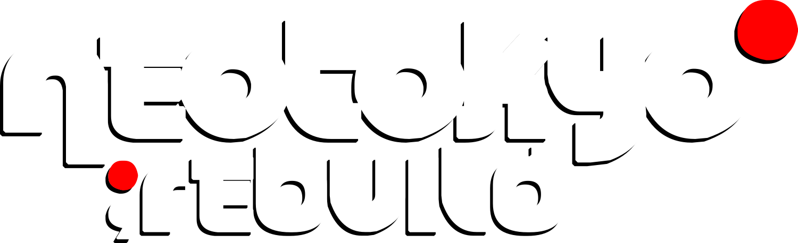

Logos
The marks and images this wiki uses, where each came from, and where it appears
The wiki uses four brand images. The NT;RE mark from Wireframe is the primary logo and appears in the header of every page. The other three come from the NEOTOKYO;REBUILD project's Open Collective page. Each asset is shown below on a dark and a light background.
NT;RE mark
| Role | Primary logo: the site header, beside a WIKI label |
| File | img/nt-mark.svg, inlined into each page by build.py |
| Source | Wireframe, crates/viewer/web/src/app/header/glyphs.ts at 3e7a535. It is drawn from the terminal art tools/logo.sh prints, with each character a 1×2 cell. |
| Colours | Letters in the current text colour, drop shadow in the same colour at 30%, dot #d1482e |
| Rights | © 2026 Dan Peavey. All rights reserved (Wireframe's licence). |

The letters inherit the surrounding text colour, so the mark follows the theme with no second file: light on dark pages, dark on light ones. The dot stays the same red in both.
NEOTOKYO;REBUILD wordmark

| Role | Main page title |
| File | img/wordmark.png, 1500×458 PNG with transparency |
| Source | Cover image of the Open Collective page: images.opencollective.com/neotokyorebuild/3b68ff8/background.png |
| Colours | White letters, hard black offset shadow, dots #ff0000 |
| Rights | NEOTOKYO;REBUILD project |

NT; badge
| Role | Source of the favicon. It was the header logo until the Wireframe mark replaced it. |
| File | img/nt-logo.png, 132×128 PNG |
| Source | Avatar of the Open Collective page: images.opencollective.com/neotokyorebuild/d857ad0/logo.png |
| Colours | Black glyph on a 90%-opaque white disc, dot #c62a1d |
| Rights | NEOTOKYO;REBUILD project |

Favicon
The browser-tab icon, img/favicon.png: the NT; badge scaled to 64×64. The disc keeps it readable on both light and dark tab bars.

Open questions
- Three reds. The Wireframe mark uses
#d1482e, the badge#c62a1d, and the wordmark#ff0000, which the site also uses for its dots. Choosing one would make the wiki consistent. See Colours & type. - Favicon. It still comes from the Open Collective badge. It could switch to Wireframe's app icon so the tab matches the header.
Category:Branding